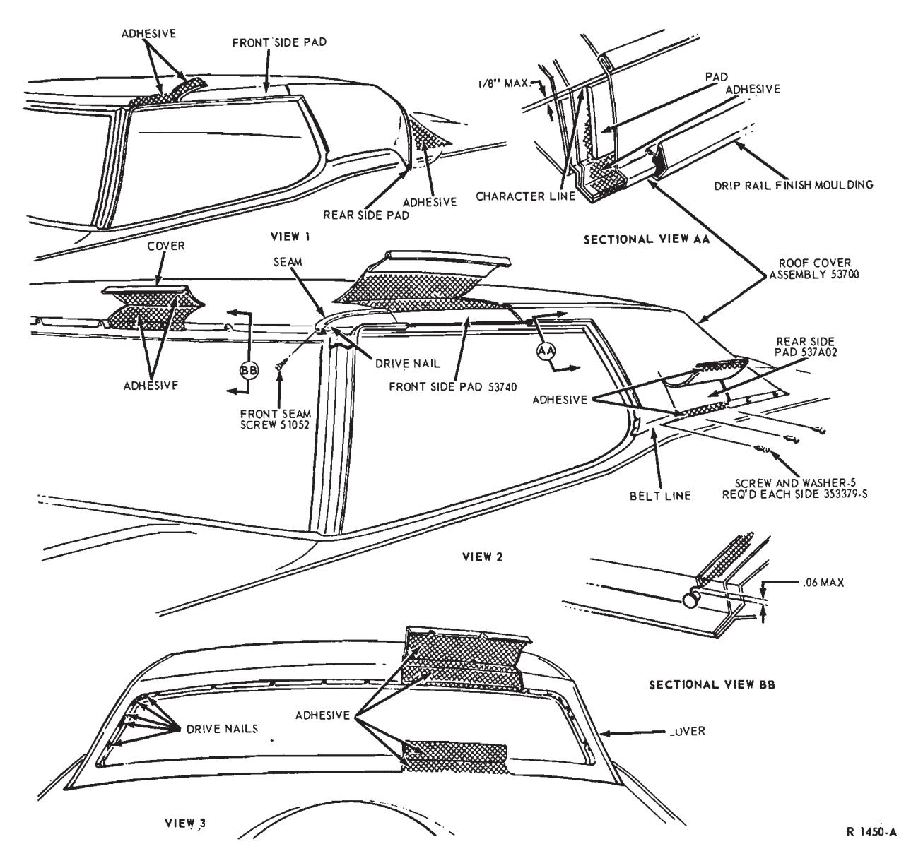
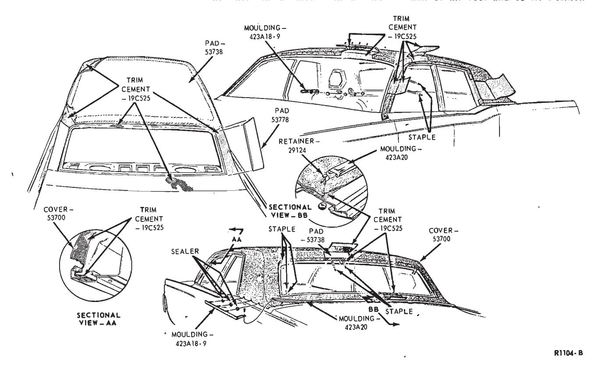

Roof Outside Cover · 46-02-01
All Except Thunderbird, Continental Mark III and Lincoln Continental
The following roof outside cover removal and installation procedures generally apply to all models. If some of the steps do not apply to the particular model being serviced, proceed to the next step. (Figs. 1 and 2 are typical of these models.)
Removal
- Disconnect the battery ground cable from the battery.
- Cover the fenders, seats and rear deck areas with protective covers.
- Remove the rear seat cushion and seat back.
- Remove the quarter trim panels.
- Remove the roof side rail weatherstrips and the weatherstrip retainers.
- Remove the windshield pillar mouldings, the windshield upper mouldings, the windshield side mouldings, and corner extension mouldings.
- Drill out the pop rivets and remove the drip rail mouldings and the quarter window mouldings.
- Remove the blind quarter trim panels (position the windlace aside and disconnect the light wiring leads).
- Remove the side and rear belt mouldings.
- Remove the roof side ornaments.
- Remove the back window outside mouldings.
- Remove the screws and washers which retain the roof cover at the belt line.
- Remove the windshield and back window moulding retainers.
- Remove the screws and washers retaining the cover at the belt line.
- Remove the screws that retain the cover at the front and rear window openings (one at each seam).
- Remove the cover from the roof, leaving the old staples in place.
- Apply sealer to the staples.
- Clean all mouldings and retainers. Clean excess sealer from around the windshield and back window.
Installation
-
Measure and mark the center of the new top fabric.
-
Measure and mark the center of the vehicle roof.
-
Apply adhesive (C5AZ-19C525-A) to the underside of the cover between the center mark and the outboard seam. Do not apply adhesive to the cover in the area below the back window.
-
Apply adhesive (C5AZ-19C525-A) to the half of the roof. Do not apply adhesive to the area below the back window.
-
Position the cover to the roof and align the center marks. Then, cement the cover to the roof. Stretch out all wrinkles.
-
Apply adhesive to the other half of the roof and cover. Position the cover to the roof and stretch out all
-
Apply adhesive (C5 AZ-19C525-A) to the body and underside of the cover in the area below the back window. Then, position the cover and remove any wrinkles.
-
Apply adhesive to the roof sides and door openings and to the underside of the cover. Make angle cuts at the corners as necessary. Then stretch the cover and cement it in place.
-
Trim the roof cover at the windshield and back window openings. Leave 1/2 inch of material at the openings for cover attachment in the window opening recess.
-
Apply adhesive (C5AZ-19C525-A) to the back window opening and the underside of the roof cover. Make angle cuts as necessary at the corners and cement the material in the back window opening recess. Trim the cover around the moulding retainer weld studs.
-
Apply adhesive (C5AZ-19C525-A) to the windshield opening and the underside of the roof cover. Make angle cuts as necessary at the corners and cement the material in the windshield opening recess. Trim the cover around the moulding retainer weld studs.
-
Punch 16 holes evenly spaced across the top of the windshield opening recess with an awl. Then, install drive nails to retain the top at the recess. Apply sealer over the drive nail heads. Cover the glass and use extreme care to avoid damage to the glass or glass edges.
-
Install the cover retaining screws at the right and left seams above the windshield opening.
-
Punch 20 holes evenly spaced at the top and sides of the rear window opening recess with an awl. Then, install drive nails to retain the top at the back window. Apply sealer over the drive nail heads. Cover the glass and use extreme care to avoid damage to the glass or glass edges.

Fig. 1 — Roof Outside Cover Installation — Thunderbird and Continental Mark III -
Install the cover retaining screws at the right and left seams above the rear window opening.
-
Apply sealer around the windshield and back window.
-
Install the windshield and back window moulding retainers.
-
With an awl, locate and install the screws and washers which retain the roof cover at the belt line.
-
Position and install the side and rear belt mouldings (apply sealer over the moulding retainer studs).
-
Install the roof drip rail mouldings and the quarter window mouldings.
-
Install the windshield top and side mouldings.
-
Install the front pillar mouldings.
-
Position and install the roof side rail weatherstrip retainers and the weatherstrips.
-
Install the blind quarter trim panels (connect the light wire leads and position the windlace).
-
Install the quarter trim panels and watershields.
-
Install the rear seat back and seat cushion.
-
Install the back window mouldings
-
Clean the windows, mouldings and top cover.
-
Connect the battery ground cable to the battery and remove all protective coverings.
Thunderbird and Continental Mark III
Removal
- Unpack the new cover and spread it out to remove the wrinkles.
- Remove the windshield wiper arms and blades.
- Disconnect the windshield washer hoses at the cowl top grille and remove the grille.
- Remove the windshield outside top, side and belt mouldings and the outside pillar mouldings.
- Remove the screws that attach the end of each door opening weatherstrips to the cowl and remove the weatherstrip retainers.
- Remove the screws attaching each door opening weatherstrip re- tainer and remove the retainers.
- Remove the pop rivet attaching the upper end of each pillar moulding, remove three screws attaching each outside finish panel at the glass opening, and remove the outside finish panel and pillar moulding as an assembly. Refer to Group 48.
- Cut the sealer along the windshield drip moulding and remove the drip moulding.
- Remove the front and rear (mouldings) pads from each roof side inner rail
- Remove the rear seat cushion and seat back from the vehicle.
- Remove the light from each roof side trim cover and remove the left and right roof side trim covers.
- Remove five drip rail finish moulding attaching rivets from each side and remove the drip rails.
- Remove two nuts attaching each roof side ornament and remove the ornaments (Group 48).
- Remove six nuts retaining each back belt side moulding and remove the belt side mouldings (Group 48).
- Remove the five screws and washer assemblies that retain the roof cover at each side belt line (View 2, Fig. 1).
- Remove the back belt moulding from the six retainers.
- Remove the six belt moulding center section retainers.
- Remove the back window exterior mouldings with the tool shown in Group 48.
- Remove the back window exterior moulding retainers from the window opening.
- Remove the windshield outside top moulding retainers from the windshield opening.
- Remove the right and left front seam retaining screws (Fig. 2).
- Remove the roof cover from the vehicle. Do not remove the staples used to retain the cover.
- Cut any surplus butyl from the top edge of the windshield to allow proper installation of the front drip rail. Remove any surplus of butyl from the back window opening.
- Apply sealer over all staples in the windshield and back window openings.
Installation
If the front or rear roof side pads are torn or damaged, perform steps 1 through 3. If the pads do not require replacement, skip steps 1 through 3 and proceed with step 4.
-
Pull off the old pad and clean the sheet metal area with a wire brush.
-
Apply adhesive (C5AZ-19C525-A) to the roof sheet metal and the underside of the new pad.
-
Position the new pad so that its top edge aligns with the character line on the roof (Fig. 1).
-
Measure and mark the center of the new top fabric.
-
Measure and mark the center of the vehicle roof.
-
Apply adhesive (C5AZ-19C525-A) to the underside of the new roof cover assembly between the center mark and one of the outboard seams. Do not apply adhesive to those parts of the assembly which cover the side pads and the area around the door, windshield and back window openings.
-
Apply adhesive (C5AZ-19C525-A) to the corresponding half of the roof. Do not apply adhesive to the side pads and the sheet metal area around the door, windshield, and back window openings.
-
Position the cover to the roof, and align the center marks. Align the seam to the character line as shown in view AA of Fig. 1. Then, cement the cover to the roof. Stretch out all wrinkles.
-
Apply adhesive to the opposite half of the roof and cover. Position the cover to the roof as described in step 8, and stretch out all wrinkles.

Fig. 2 — Roof Outside Cover Installation — Lincoln Continental -
Apply adhesive (C5AZ-19C525-A) to the body and underside of the cover in the area below the back window (View 3, Fig. 1). Then, position the cover and remove any wrinkles.
-
Apply adhesive to the roof sides (drip rail and belt line) and door openings and to the underside of the cover. Make angle cuts at the corners as necessary. Then, stretch the cover and cement in place (View 2, Fig. 1).
-
Trim the roof cover at the windshield and back window openings. Leave 1/2 inch of material at the openings for cover attachment in the window opening recess.
-
Apply adhesive (C5AZ-19C525-A) to the back window opening and the underside of the roof cover. Make angle cuts as necessary at the corners and cement the material in the back window opening recess. Trim the cover around the moulding retainer weld studs (View BB, Fig. 1).
-
Apply adhesive (C5AZ-19C525-A) to the windshield opening and the underside of the roof cover. Make angle cuts as necessary at the corners and cement the material in the windshield opening recess. Trim the cover around the moulding retainer weld studs (View BB, Fig. 1).
-
With an awl punch a hole in the top of the windshield opening recess at the outer side of each seam. Then install drive nails to retain the roof cover at the recess (View 2, Fig. 1). Apply butyl sealer over each drive nail.
-
Punch three holes in each upper corner and two holes at each side of the back window opening. Then, install drive nails to retain the roof cover at the back window (View 3, Fig. 1). Apply butyl sealer over each drive nail.
-
Clean all mouldings and retainers.
-
Position the drip rail finish mouldings to the drip rails on each side of the roof, and install the five attaching rivets (View 2 and View AA, Fig. 1).
-
At each side belt line, trim the roof cover and cement the cover to the body. Install the five retainer screws and washers at the belt line (View 2, Fig. 1).
-
Locate and punch six holes in the roof cover at each side belt line for the belt side moulding retainer attaching studs (Group 48).
-
Install the belt side mouldings by inserting the studs into the punched holes described in step 20. From inside the car, install the retaining nuts on the studs. Apply sealer around the nuts to prevent leakage.
-
Install the six back belt moulding center section retainers below the back window opening, and then install the mouldings to the retainers (Group 48).
-
Install the back window exterior moulding retainers and mouldings (Group 48).
-
At each roof rear quarter, locate and punch two holes for the roof side ornament. Install each side ornament with the studs entering the punched holes; then, from inside the vehicle, install the retaining nuts on the studs. Apply sealer around the nuts.
-
Install the light in each roof side trim cover and install the covers, one trim clip each.
-
Install the rear seat back and rear seat cushion.
-
Install the front and rear (mouldings) pads to each roof inner side rail.
-
Position the front drip rail in the windshield opening recess and install the windshield outside top moulding retainers.
-
Position the right and left outside finish panel and pillar moulding to the windshield pillar and install the three retaining screws and pop rivet (Group 48).
-
Install the door opening weatherstrip retainers and weatherstrips, and install the screws that attach the end of each weatherstrip to the cowl.
-
Install the windshield outside top, side and belt mouldings, the outside pillar mouldings.
-
Install the cowl top grille and connect the windshield washer hoses.
-
Install the windshield wiper arms and blades.
-
Apply sealer C3AZ-19562-A (for white tops) or C3AZ-19562-B (for black tops) in the drip rail over the windshield.
-
Clean the glass, mouldings, top, and surrounding area.
Lincoln Continental
Removal
- Remove the right and left windshield inside and upper garnish mouldings.
- Remove the right and left sun visor assemblies.
- Remove the windshield inside lower corner and lower garnish mouldings.
- Remove the roof side rail weatherstrips and weatherstrip retainers.
- Remove the windshield pillar drip rail moulding retaining screws, and remove the drip rail mouldings.
- Remove the windshield outside side mouldings.
- Remove the windshield outside top mouldings.
- Remove the windshield wiper blades and arms.
- Remove the cowl top grille attaching screws, and remove the cowl top grille. Disconnect the windshield washer hoses.
- Remove the windshield outside lower mouldings.
- Remove the windshield from the car and place it on a bench.
- Remove the rear seat cushion and seat back from the car.
- Remove the right and left rear window inside side garnish moulding attaching screws, and remove the side mouldings.
- Remove the rear window inside top garnish moulding attaching screws, and remove the top moulding.
- Remove the right and left quarter belt garnish moulding attaching screws, and remove the moulding.
- Remove the right and left side coat hooks.
- Remove the right and left roof side inside rear moulding attaching screws, and remove the mouldings.
- Remove the right and left roof headlining quarter trim panels.
- Remove the right and left quarter trim panels.
- Remove the package tray attaching screws and remove the package tray.
- Remove the outside side, upper, and lower mouldings from the back window.
- Remove the back window from the car and place it on a bench.
- Remove the right and left back belt moulding retaining nuts and remove the mouldings.
- Remove 3 nuts and 1 screw retaining the right and left back belt side mouldings and remove the mouldings (Fig. 2).
- Clean the sealer from around the windshield and back window openings, and remove the moulding clips and window supports.
- Using a 0.128-0.132 inch diameter drill, remove the pop rivets which attach the drip rail side finish moulding to the right and left drip rail flanges.
- Remove the retainer strips, and clean the sealer from the drip rails.
- Remove the top material re- taining staples from the windshield and back window pinch weld flange.
- Pull the front of the roof cover toward the rear of the car. Pull the cover loose from the cemented area around the back window upper back panel and roof quarters, and remove the cover.
- Clean the old cement from around the back window and roof quarters with solvent.
- Seal all staple holes around the windshield and back window openings with caulking cord AB-19560-A or pressure tape C1AZ-19627-A.
Installation
During installation of the top cover, drive nails should be used in place of staples if staple equipment is not available. When installing drive nails in areas where they were originally used, new holes must be used for adequate retention.
- Position the roof cover on the roof panel. Be sure that the cover is properly centered.
- Cement the front edge of the cover at the windshield opening with C2AZ-19C525-A trim cement (Fig. 2). Then, install the drive nails. Do not re-use the drive nail holes. New holes must be made.
- Place protective covers on the luggage compartment area to protect the paint finish.
- Cement the top cover to the back window opening with trim ce- ment C2AZ-19C525-A (Fig. 2) and install the drive nails. Do not re-use the drive nail holes.
- Cement the top cover to the right and left roof side quarters at the belt line with trim cement C2AZ-19C525-A, and install the retaining screws
- Clamp the right and left roof outside cover retainers in position and install pop rivets 378906-S (Fig. 2). Tape should be used to prevent the clamps from damaging the finish.
- Trim excess cover material around the top.
- Position masking tape on the top cover along the entire length of the drip rail. The tape should be positioned a little below the top edge of the drip rail to regulate the depth of the sealer. If the tape and sealer is not below the edge of the drip rail, water will spill over the drip rail.
- Apply sealer C3AZ-19562-A (for white tops) or C3AZ-19562-B (for black tops) over the entire length of the drip rail retainers (Fig. 2). When the drip rail is properly sealed, a minimum depth of 1/8 inch should be retained for adequate water drainage. After the sealer is smooth, remove the tape from the top.
- Clean excessive sealer from the drip rails.
- Install the windshield and back window moulding retainer clips and the windshield and back window spacers on the flanges.
- Clean all old sealer from the windshield and back window.
- Install the windshield and back window using the recommended procedure.
- Install the windshield outside lower mouldings.
- Connect the windshield washer hoses and install the cowl top grille.
- Install the windshield wiper arms and blades.
- Install the windshield outside top moulding, and apply sealer for a water tight seal.
- Install the right and left windshield outside side mouldings.
- Install the right and left drip rail side finish mouldings.
- Install the right and left roof side weatherstrip retainers and weatherstrips.
- Install the back window outside mouldings, back belt mouldings, and back belt side mouldings.
- Install the package tray.
- Install the headlining quarter trim panels.
- Install the quarter trim panels.
- Install the back window inside garnish mouldings, (and coat hooks.)
- Install the roof quarter inside garnish mouldings, and coat hooks.
- Install the rear seat back and seat cushion.
- Install the right and left sunvisor assemblies.
- Install the windshield inside top side and lower garnish mouldings.
Roof Outside Cover Repairs
The information given in this section applies to all car lines. The illustrations shown are of the Thunderbird, but they are typical of all car lines.
Extent of Repairs
The type and extent of repairs that can be performed on vinyl roofs generally fall into the following categories:
Repairs During Pre-Delivery
A repair made during pre-delivery can be more extensive than one that is brought to the dealer’s attention by the customer after the vehicle has been delivered. Therefore, close inspection of the vinyl roof is imperative during pre-delivery and obvious defects should be corrected to avoid potential customer complaints.
Customer Complaint Repairs
Usually customer complaint repairs are somewhat limited as the customer is more apt to be severly critical of the repaired area. Certain complaint repairs should be discussed with the customer and the location and type of repair should be the guide in determining the feasibility of the repair, along with assuring the customer that the repair will be performed to his satisfaction. In many cases the cus- tomer will accept the repair to avoid long delays and also if he can be assured that the repair will restore the vinyl top to a like-new condition.
Repairs on White Vinyl
Although the same type of repairs can be performed on white vinyl tops, the repair becomes more difficult (particularly when repairing a cut or scuff on the vinyl surface). However, with certain precautions the repair can be made to an acceptable level.
It is important that the vinyl surface is thoroughly cleaned before the repair is made and also that excessive heat be avoided to prevent possible charring of the vinyl. The recommended cleaning procedure and temp- eratures are outlined under Repair Procedures.